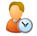

|
NexAdmin: Administrador NexCafé
É o programa onde todas rotinas de atendimento da loja (ex: cadastrar cliente, iniciar um acesso, vender um produto, abrir/fechar caixa) são realizadas. Ele é o programa que o atendente da loja tem que lidar todos os dias. Uma loja pode ter mais de um NexAdmin, embora o mais comum seja existir um único programa administrador por local. Mas em lojas maiores podem existir vários computadores e pessoas dedicadas a atender os clientes, nesse caso bastaria instalar o NexAdmin em cada um desses computadores e configurar para que eles se conectem ao servidor da loja.
|